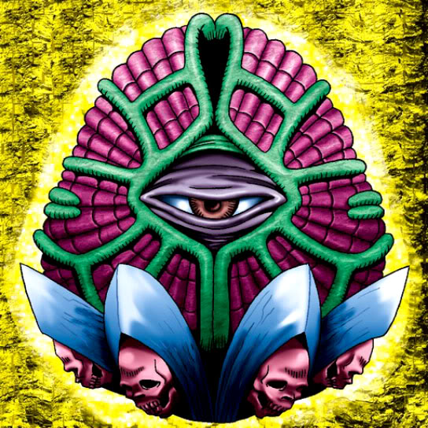

Gorgon Egg

Description: "Transforms into a ZOMBIE/DARK monster when strengthened with Insect Imitation."
STATS
ATK: 300
DEF: 1300DECK COST
Deck Cost per Card: 21EFFECT NOT IMPLEMENTED
Fusion List (2 Possible Fusions)
- Gorgon Egg + Man-Eating Plant = Rose Spectre of Dunn
- Gorgon Egg + Petit Dragon = Koumori Dragon